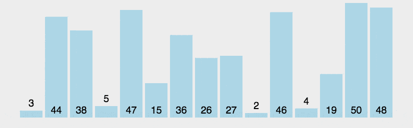
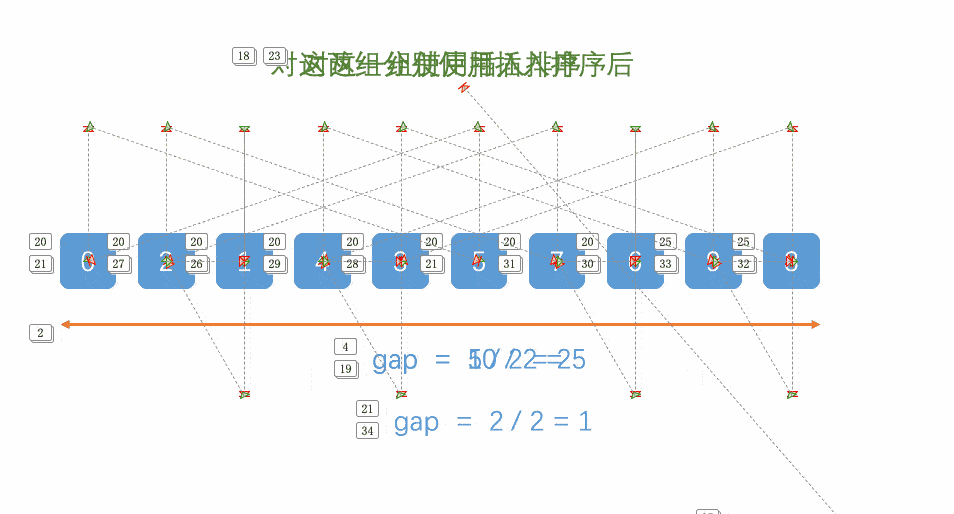

冒泡排序（Bubble Sort）是一种较简单的排序算法，其思想是重复地走访要排序的元素列，依次比较两个相邻的元素，如果顺序错误就交换它们。这个过程会重复进行，直到没有相邻元素需要交换，也就是说该元素列已经排序完成。算法的名字来源于越小的元素会经由交换慢慢“浮”到数列的顶端，就像碳酸饮料中二氧化碳的气泡最终会上浮到顶端一样，因此得名“冒泡排序”。
#include <iostream>
using namespace std;
void bubbleSort(int arr[], int n) {
for(int i = 0; i < n - 1; i++){
for(int j = 0; j < n - i - 1; j++){
if(arr[j] > arr[j+1]){
int temp = arr[j];
arr[j] = arr[j+1];
arr[j+1] = temp;
}
}
}
}
选择排序是一种简单直观的排序算法。它的工作原理是：第一次从待排序的数据元素中选出最小（或最大）的一个元素，存放在序列的起始位置，然后再从剩余的未排序元素中寻找到最小（大）元素，继续放在起始位置直到未排序元素个数为0。
选择排序的步骤：
#include <iostream>
using namespace std;
void selectionSort(int arr[], int n) {
for (int i = 0; i < n-1; i++) {
int minIndex = i;
for (int j = i+1; j < n; j++) {
if (arr[j] < arr[minIndex]) {
minIndex = j;
}
}
int temp = arr[i];
arr[i] = arr[minIndex];
arr[minIndex] = temp;
}
}
插入排序是一种简单直观的排序算法，它的工作原理是通过对未排序部分的元素逐一进行比较，并按大小顺序逐步“插入”到已排序部分中的适当位置，最终完成整个序列的排序。
插入排序步骤：
tem，从已排序的元素序列从后往前扫描。tem，则将该元素移到下一位。tem 的元素。tem 插入到该元素的后面。#include <iostream>
using namespace std;
void insertionSort(int arr[], int n) {
int i, key, j;
for (i = 1; i < n; i++) {
key = arr[i];
j = i - 1;
// 默认i之前的元素是排列好的
// 将大于key的元素向后移动
while (j >= 0 && arr[j] > key) {
arr[j + 1] = arr[j];
j--;
}
arr[j + 1] = key;
}
}
希尔排序，也被称为缩小增量排序，是插入排序的一种改进算法。它通过将原始序列分割为多个较小的子序列来进行排序，最终将整个序列排序。
希尔排序的步骤如下：
作者自我理解：实际上希尔排序就是插入排序的优化，也就是他的插入排序 plus，所以我们只需要知道他怎么把插入排序用到了里边就可以理解这个算法。
1.首先假如有五个元素 5 3 2 4 6
2.第一次增量取 n/2，增量就是两个数之间的位置间隔，间隔一样的是一组；比如现在取的是5/2=2，那么 【5 2 6】 是一组，【3,4】是一组。
以此类推。。。。。。
void shellSort(int arr[], int n) {
for (int gap = n / 2; gap > 0; gap /= 2) {
for (int i = gap; i < n; i++) {
int temp = arr[i];
int j;
// 这里就是插入排序 需要把i插入到前边的组里。
for (j = i; j >= gap && arr[j - gap] > temp; j -= gap) {
arr[j] = arr[j - gap];
}
arr[j] = temp;
}
}
}
归并排序（Merge sort）是建立在归并操作上的一种有效的排序算法，该算法是采用分治法（Divide and Conquer）的一个非常典型的应用。将已有序的子序列合并，得到完全有序的序列；即先使每个子序列有序，再使子序列段间有序。
归并排序算法有两个基本的操作：
void mergeSort(vector<int>& arr, int left, int right) {
if (left < right) {
int middle = left + (right - left) / 2;
// 递归拆分左右子数组
mergeSort(arr, left, middle);
mergeSort(arr, middle + 1, right);
// 合并排序后的子数组
merge(arr, left, middle, right);
}
}
void merge(vector<int>& arr, int start, int mid, int end) {
int n1 = mid - start + 1; // 左半部分数组的长度
int n2 = end - mid; // 右半部分数组的长度
// 将原数组的左半部分复制到左子数组
vector<int> leftArr(n1);
for (int i = 0; i < n1; i++) {
leftArr[i] = arr[start + i];
}
int i = 0, j = mid + 1;
int k = start;
while (i < n1 && j <= end) {
if (leftArr[i] <= arr[j]) {
arr[k] = leftArr[i];
i++;
} else {
arr[k] = arr[j];
j++;
}
k++;
}
// 将剩余的元素复制回原数组
while (i < n1) {
arr[k] = leftArr[i];
i++;
k++;
}
}
快速排序是一种基于分治思想的排序算法。它通过选择一个元素作为"枢轴"（pivot），将数组划分为两个子数组，较小的元素放在枢轴的左侧，较大的元素放在枢轴的右侧，然后对这两个子数组分别递归地进行同样的操作，直到子数组只有一个元素或为空。
// 快速排序
void quickSort(vector& arr, int begin, int end) {
if (begin < end) {
int pivotIndex = partition(arr, begin, end); // 将pivot放到合适的位置
quickSort(arr, begin, pivotIndex - 1); // 对pivot左边的子数组进行快速排序
quickSort(arr, pivotIndex + 1, end); // 对pivot右边的子数组进行快速排序
}
}
// 将pivot放到合适的位置，并返回其索引
int partition(vector& arr, int begin, int end) {
int pivot = arr[begin]; // 选择最左边的元素作为pivot
int left = begin + 1;
int right = end;
while (left <= right) {
// end先走
while (left <= right && arr[right] >= pivot) {
right--;
}
// begin再走
while (left <= right && arr[left] < pivot) {
left++;
}
if (left < right) {
swap(arr[left], arr[right]);
}
}
swap(arr[begin], arr[right]);
return right;
}
稳定性指的是当有两个元素的键值相等时，排序前后它们的相对位置是否保持不变。
换句话说，如果在排序后的结果中，原始序列中相等元素的相对顺序仍然保持不变，那么这个排序算法就是稳定的。
| 算法 | 平均复杂度 | 最坏时间复杂度 | 最好时间复杂度 | 空间复杂度 | 稳定性 |
|---|---|---|---|---|---|
| 冒泡排序 | O(n2) | O(n2) | O(n) | O(1) | 稳定 |
| 选择排序 | O(n2) | O(n2) | O(n2) | O(1) | 不稳定 |
| 插入排序 | O(n2) | O(n2) | O(n) | O(1) | 稳定 |
| 希尔排序 | O(nlogn) | O(n2) | O(nlogn) | O(1) | 不稳定 |
| 归并排序 | O(nlogn) | O(nlogn) | O(nlogn) | O(n) | 稳定 |
| 快速排序 | O(nlogn) | O(n2) | O(nlogn) | O(logn) | 不稳定 |
| 堆排序 | O(nlogn) | O(nlogn) | O(nlogn) | O(1) | 不稳定 |
| 计数排序 | O(n+k) | O(n+k) | O(n+k) | O(n+k) | 稳定 |
| 桶排序 | O(n+k) | O(n2) | O(n) | O(n+k) | 稳定 |
| 基数排序 | O(nk) | O(nk) | O(nk) | O(n+k) | 稳定 |
| 排序算法 | 最好情况 | 最坏情况 |
|---|---|---|
| 冒泡排序 | 输入数据已经完全排序，时间复杂度为O(n) | 输入数据完全逆序，时间复杂度为O(n2) |
| 插入排序 | 输入数据已经完全排序，时间复杂度为O(n) | 输入数据完全逆序，时间复杂度为O(n2) |
| 选择排序 | 无论输入数据的顺序如何，时间复杂度始终为O(n2) | 无论输入数据的顺序如何，时间复杂度始终为O(n2) |
| 快速排序 | 每次划分都正好将数组均匀划分为两部分，时间复杂度为O(nlogn) | 每次划分都选择了数组中的最大/最小值作为基准元素，时间复杂度为O(n2) |
| 归并排序 | 无论输入数据的顺序如何，时间复杂度始终为O(nlogn) | 无论输入数据的顺序如何，时间复杂度始终为O(nlogn) |
| 堆排序 | 无论输入数据的顺序如何，时间复杂度始终为O(nlogn) | 无论输入数据的顺序如何，时间复杂度始终为O(nlogn) |
| 计数排序 | 输入数据的范围相对较小且分布均匀，时间复杂度为O(n+k) | 输入数据取值范围较大，时间复杂度为O(n+k) |
| 桶排序 | 桶的数量恰好等于输入数据的数量，时间复杂度为O(n) | 所有元素分布在一个桶中，时间复杂度为O(n2) |
| 基数排序 | 元素各个位上的值分布均匀，时间复杂度为O(d(n+r)) | 元素各个位上的值分布不均匀，时间复杂度为O(d(n+r)) |